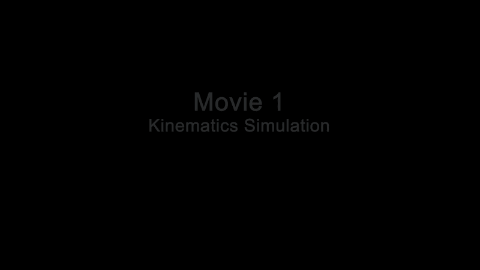
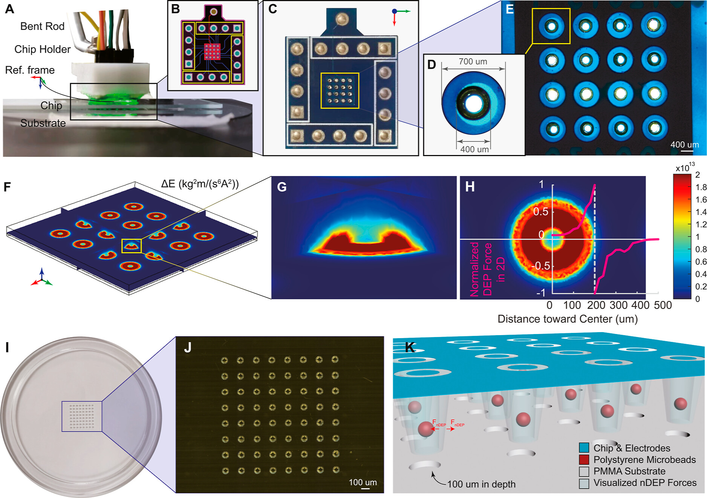
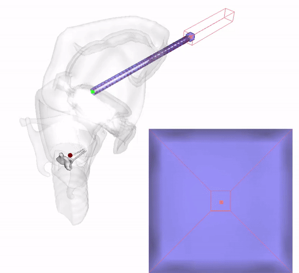
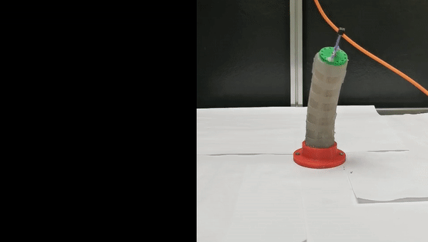
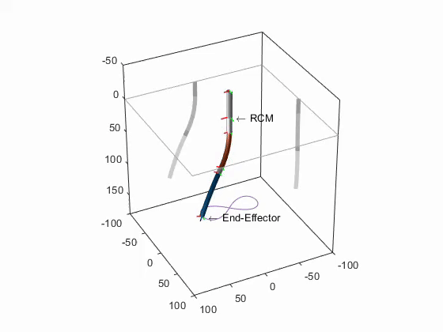
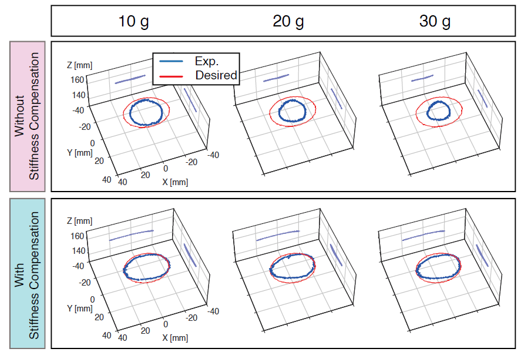
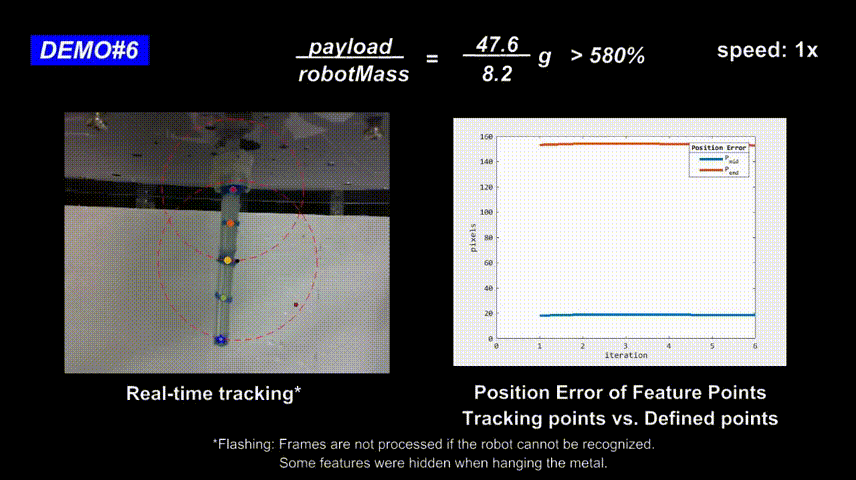
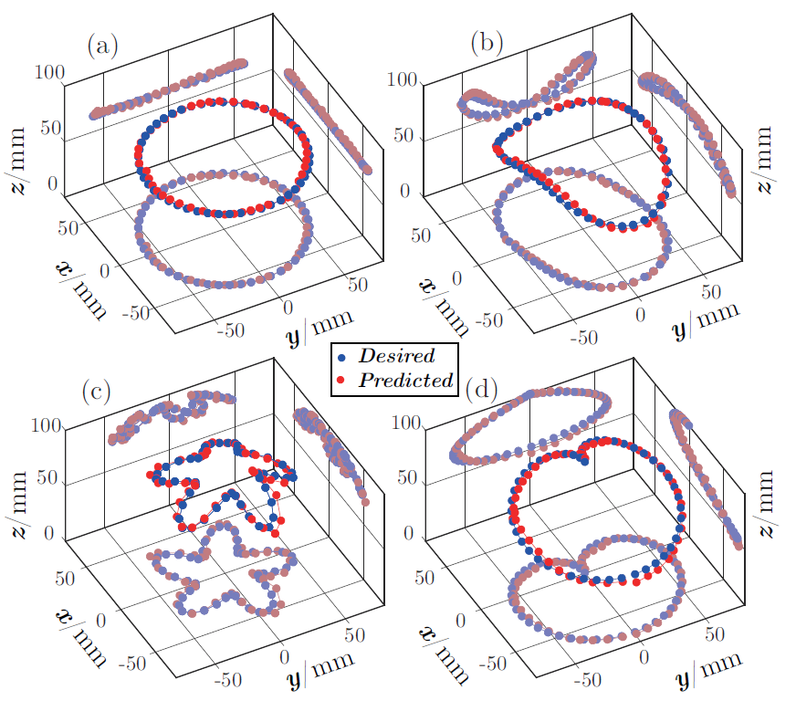

Research Assistant Professor,
Department of Electronic Engineering, CUHK
Visiting Assistant Professor,
Department of Mechanical Engineering, Stanford University
I conduct research in flexible robotics, mechatronics, perception, sensorimotor control, robophysics, and robot/mechano-intelligence, with the goal of developing robust, compliant, and intelligent deformable robotic systems.
I received my Ph.D. in Mechanical Engineering from The Hong Kong Polytechnic University in 2022, where I was advised by Henry K. Chu and Li Cheng. From 2022 to 2023, I was a Postdoctoral Fellow at CUHK, working with Hongliang Ren. In Fall 2023, I was promoted to Research Assistant Professor in the same department. In 2026, I joined the Department of Mechanical Engineering at Stanford University as a Visiting Assistant Professor, working with Mark R. Cutkosky.
News
- [03/2026]Won Silver Medal in the 51st International Exhibition of Inventions Geneva, Switzerland. [EE Press] [CUHK Press]
- [02/2026]Joining ME@Stanford as a Visiting Faculty for the spring quarter 2026.
- [12/2025]Our paper was awarded T.J. Tarn Best Paper Award in ROBIO 2025.
- [06/2025]Received GRF 2025/26.
- [05/2025]Received the International Research Exploration Seed Grant with Prof. Mark Cutkosky from Stanford.
- [02/2025]Honored to join Biomimetic Intelligence and Robotics (JCR Q1, IF: 5.4) as a Young Editorial Board Member.
- [01/2025]Our work with Prof. Zhe Min (Shandong U) has been accepted by Nature Reviews Electrical Engineering.
- [08/2024]Received a mini grant from NSFC'24 [CUHK Press].
- [05/2024]Invited speaker at ICRA Rising Star workshop: Continuum and Soft Robotics for Medical Applications.












-
General Research Fund — Research Grants Council"CryroFR"
-
International Research Exploration Seed Grant — Stanford University"Gecko-inspired variable stiffness flexible robot"
-
General Program — Guangdong Natural Science Fund"Soft Robophysical Simulation"
-
Young Scientists Fund — Natural Science Foundation of China (NSFC)Coupled Tendon-driven Continuum Robots for R-MIS
-
IdeaBooster Fund Award — CUHK InnoPort"Miniature Notched Tubular Soft Robots"
- ELEG4701 Intelligent Interactive Robot Practice (24'Spring, 24'Fall, 25'Fall)
- ELEG4998 Final Year Project I
- ELEG4999 Final Year Project II